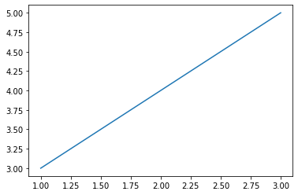

import pandas as pd
import numpy as np
import matplotlib.pyplot as pltLatex
Notebook - пример для того чтобы разобраться в особенностсях рабты с nbcnovert
\[f(x) = x_2+3x+22\]
Matplotlib график
ans = plt.plot([1,2,3], [3,4,5])
Просто картинка
pandas таблица
pd.DataFrame(
np.random.rand(20, 30)
)| 0 | 1 | 2 | 3 | 4 | 5 | 6 | 7 | 8 | 9 | ... | 20 | 21 | 22 | 23 | 24 | 25 | 26 | 27 | 28 | 29 | |
|---|---|---|---|---|---|---|---|---|---|---|---|---|---|---|---|---|---|---|---|---|---|
| 0 | 0.663143 | 0.021464 | 0.858000 | 0.766506 | 0.985039 | 0.346647 | 0.364177 | 0.912234 | 0.037032 | 0.272790 | ... | 0.327494 | 0.880709 | 0.041401 | 0.369179 | 0.451213 | 0.611814 | 0.560559 | 0.523025 | 0.205788 | 0.422654 |
| 1 | 0.827827 | 0.649757 | 0.215769 | 0.179621 | 0.570741 | 0.088579 | 0.845170 | 0.596793 | 0.161002 | 0.002342 | ... | 0.034259 | 0.278648 | 0.882712 | 0.355811 | 0.766390 | 0.151718 | 0.863036 | 0.730791 | 0.114088 | 0.379146 |
| 2 | 0.865272 | 0.487274 | 0.399290 | 0.380105 | 0.088102 | 0.054062 | 0.795389 | 0.883104 | 0.364047 | 0.394248 | ... | 0.415779 | 0.853940 | 0.773343 | 0.865510 | 0.672601 | 0.770037 | 0.088337 | 0.236902 | 0.437594 | 0.369074 |
| 3 | 0.009670 | 0.119128 | 0.477052 | 0.103209 | 0.975513 | 0.152730 | 0.106975 | 0.577861 | 0.976428 | 0.734008 | ... | 0.431997 | 0.990676 | 0.972629 | 0.698313 | 0.197316 | 0.172827 | 0.365104 | 0.543878 | 0.373947 | 0.177256 |
| 4 | 0.209034 | 0.328370 | 0.747825 | 0.912026 | 0.684328 | 0.730339 | 0.222565 | 0.723777 | 0.249022 | 0.515858 | ... | 0.344164 | 0.825411 | 0.107212 | 0.722163 | 0.064626 | 0.557274 | 0.979061 | 0.617117 | 0.129202 | 0.828734 |
| 5 | 0.748535 | 0.438338 | 0.321346 | 0.048413 | 0.564367 | 0.938365 | 0.504495 | 0.701783 | 0.817506 | 0.966032 | ... | 0.833825 | 0.877737 | 0.827943 | 0.433181 | 0.188727 | 0.847585 | 0.873378 | 0.414874 | 0.385979 | 0.283664 |
| 6 | 0.169217 | 0.189379 | 0.279181 | 0.105524 | 0.321006 | 0.469294 | 0.298573 | 0.752147 | 0.512748 | 0.326833 | ... | 0.978364 | 0.807084 | 0.742420 | 0.718420 | 0.715044 | 0.568432 | 0.673553 | 0.608451 | 0.242622 | 0.858917 |
| 7 | 0.318894 | 0.703588 | 0.918537 | 0.798998 | 0.097702 | 0.837357 | 0.734335 | 0.260800 | 0.746494 | 0.996407 | ... | 0.895983 | 0.674704 | 0.269369 | 0.561942 | 0.527911 | 0.219911 | 0.668875 | 0.098179 | 0.040179 | 0.268487 |
| 8 | 0.538815 | 0.789962 | 0.170698 | 0.653034 | 0.209657 | 0.784521 | 0.721873 | 0.653080 | 0.735756 | 0.870527 | ... | 0.816603 | 0.700780 | 0.589116 | 0.054555 | 0.269549 | 0.292141 | 0.051452 | 0.064437 | 0.029045 | 0.033099 |
| 9 | 0.825010 | 0.985221 | 0.892499 | 0.012812 | 0.073686 | 0.189973 | 0.263994 | 0.868104 | 0.625486 | 0.905932 | ... | 0.810490 | 0.282077 | 0.346684 | 0.959549 | 0.245090 | 0.283466 | 0.027302 | 0.097790 | 0.422846 | 0.071181 |
| 10 | 0.071752 | 0.566090 | 0.576133 | 0.042006 | 0.724374 | 0.617664 | 0.646433 | 0.685819 | 0.075983 | 0.945756 | ... | 0.379925 | 0.579344 | 0.854027 | 0.674528 | 0.111671 | 0.101454 | 0.556477 | 0.319533 | 0.891699 | 0.777899 |
| 11 | 0.321099 | 0.606897 | 0.152936 | 0.282932 | 0.240571 | 0.523979 | 0.499664 | 0.103284 | 0.252159 | 0.749216 | ... | 0.756029 | 0.388600 | 0.771017 | 0.406881 | 0.670963 | 0.328559 | 0.055640 | 0.058266 | 0.255477 | 0.231221 |
| 12 | 0.069434 | 0.471599 | 0.879479 | 0.150907 | 0.259604 | 0.121494 | 0.283101 | 0.632702 | 0.969049 | 0.416081 | ... | 0.228064 | 0.802990 | 0.601474 | 0.595615 | 0.171583 | 0.885227 | 0.570803 | 0.629680 | 0.481346 | 0.823556 |
| 13 | 0.008207 | 0.210180 | 0.048300 | 0.360097 | 0.540163 | 0.947513 | 0.017571 | 0.152821 | 0.986996 | 0.352458 | ... | 0.460305 | 0.102086 | 0.617660 | 0.219018 | 0.832248 | 0.308261 | 0.002964 | 0.548857 | 0.822519 | 0.257786 |
| 14 | 0.564729 | 0.040055 | 0.281084 | 0.704265 | 0.293981 | 0.351052 | 0.014585 | 0.487037 | 0.433179 | 0.850257 | ... | 0.708030 | 0.932107 | 0.591465 | 0.046695 | 0.475054 | 0.762240 | 0.329465 | 0.752053 | 0.205726 | 0.453508 |
| 15 | 0.916010 | 0.569487 | 0.000574 | 0.240208 | 0.380580 | 0.704447 | 0.128708 | 0.905343 | 0.504579 | 0.139354 | ... | 0.489544 | 0.711177 | 0.540197 | 0.433703 | 0.889278 | 0.716258 | 0.368589 | 0.243502 | 0.430579 | 0.207018 |
| 16 | 0.555162 | 0.159681 | 0.611847 | 0.286136 | 0.345460 | 0.190651 | 0.211620 | 0.289052 | 0.445264 | 0.415703 | ... | 0.782363 | 0.835031 | 0.996787 | 0.903400 | 0.236019 | 0.176010 | 0.306686 | 0.103315 | 0.948140 | 0.046661 |
| 17 | 0.867713 | 0.831490 | 0.288641 | 0.728252 | 0.620024 | 0.315909 | 0.273223 | 0.423136 | 0.236910 | 0.257647 | ... | 0.016341 | 0.977661 | 0.601080 | 0.977532 | 0.088836 | 0.754579 | 0.807837 | 0.050929 | 0.439012 | 0.721582 |
| 18 | 0.333013 | 0.409006 | 0.669115 | 0.700568 | 0.903307 | 0.822934 | 0.635862 | 0.613437 | 0.187538 | 0.050552 | ... | 0.724519 | 0.016494 | 0.550508 | 0.223219 | 0.444358 | 0.734620 | 0.902881 | 0.728414 | 0.595171 | 0.161489 |
| 19 | 0.614472 | 0.792331 | 0.300568 | 0.345817 | 0.407511 | 0.816590 | 0.950677 | 0.037251 | 0.316392 | 0.058362 | ... | 0.296249 | 0.254440 | 0.963934 | 0.222605 | 0.509345 | 0.495333 | 0.685706 | 0.500341 | 0.956666 | 0.333952 |
20 rows × 30 columns
Тэги
В следующих ячейках записано какой тэг для каждой применен.
Тэг remove_cell для markdown ячейки.
print("remove_input")remove_inputprint("remove_output")remove_output